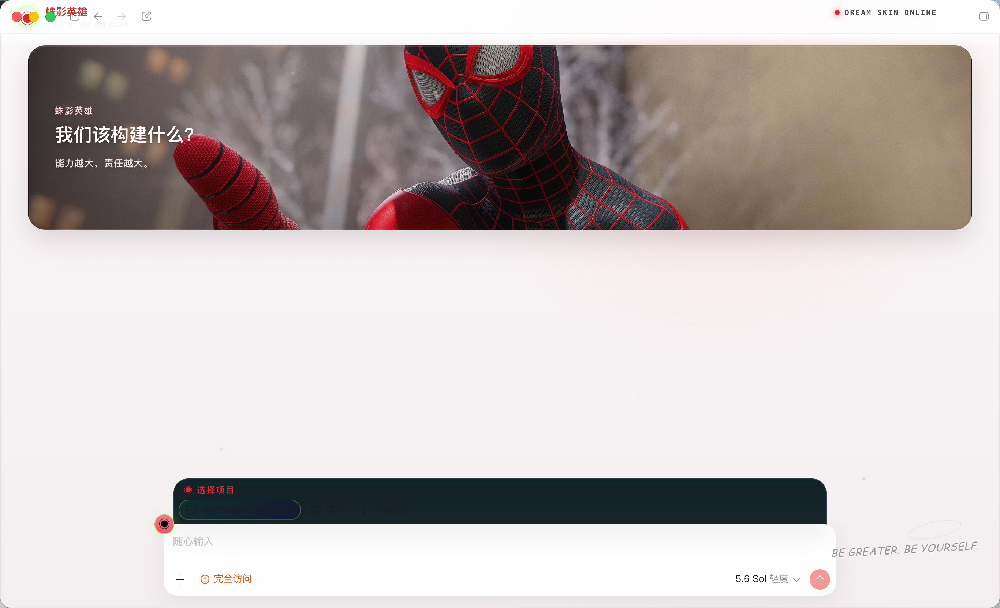

CodeX 可以定制皮肤啦
Fei-Away/Codex-Dream-Skin
这个项目可以定制 CodeX 的皮肤。
核心原理：用带调试端口的方式启动官方 Codex Desktop，然后通过 Chromium DevTools Protocol（CDP）向界面注入 CSS、JavaScript 和背景图片。
使用方法：把上面的项目地址发给 Codex，然后让他告诉你怎么使用。
想要换背景图也可以让 CodeX 实现：复制你喜欢的图片，然后告诉它：
我想要把这张图当作背景图，配色也对应适配一下，请你修改下。
可能会有些样式错位，可以让codex自己修改下或者等项目优化
